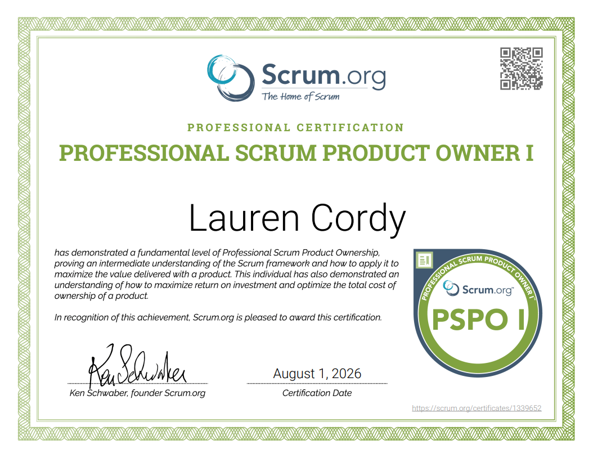
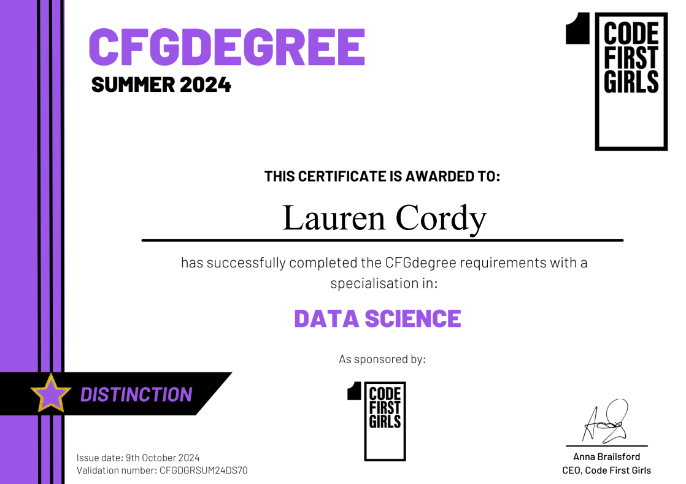

Aspiring Business Analyst
I turn ambiguous problems into requirements people can build from.
I'm an aspiring Business Analyst with a background in business support, stakeholder engagement and process improvement. I'm PSPO I certified through Scrum.org and currently expanding my Business Analysis knowledge through practical case studies and continuous learning. Below you'll find examples of how I approach discovery, requirements, prioritisation and product thinking.
Selected work
View all →
Case studies
As a hiring manager,
I want to see how a candidate thinks through a real problem,
so that I can trust them with ambiguity on day one.
I want to see how a candidate thinks through a real problem,
so that I can trust them with ambiguity on day one.
CS-01 · Independent case study
Improving Recipe Instructions Through Personalised Cooking Preferences
Meal kit recipe instructions follow one fixed workflow, which doesn't match how every user naturally cooks.
CS-02 · Independent case studySupporting Wildlife Rescue Volunteers with a Guided Triage Tool
Volunteer wildlife rescuers often can't tell whether an injured animal needs a vet, a wildlife rescue, or can safely be left alone.
Certifications
PSPO I
Professional Scrum Product Owner I - Scrum.org, 2026

CFG
Code First Girls CFG Degree in Data Science, 2024

JIRA
Get the Most Out of Jira - Atlassian Learning, 2026
NCFE
NCFE CACHE: Level 2 Certificate in Information, Advice or Guidance, 2024
BCS
Currently studying: BCS Foundation Certificate in Business Analysis